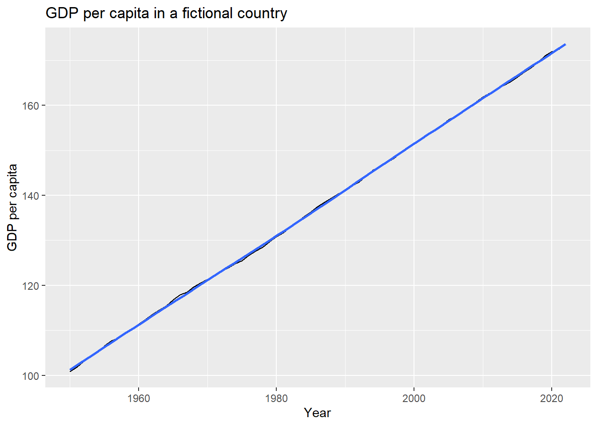

8 Generieren von Code
Chat gpt kann nicht nur zum Erstellen von Text in normaler Sprache genutzt werden, sondern auch zur Erstellung von Code in Programmiersprachen. Im Folgenden wird dies insbesondere für die Sprache R und für den TeX-Befehlssatz TikZ gezeigt. 1
8.1 R
8.1.1 R im allgemeinen Chat
Die Verwendung von Chat GPT zur Erzeugung von R-Code bietet eine Reihe von Vorteilen. Es kann Zeit sparen, indem Code schnell und effizient generiert wird. Es kann auch als Inspiration für neue Ideen und Lösungen dienen und die Problemlösung beschleunigen. Darüber hinaus kann Chat GPT dabei helfen, Fehler im Code zu identifizieren und zu korrigieren, was die Effizienz und Genauigkeit verbessert.
Grundsätzlich kann man im Chatfenster eine Frage formulieren und R-Code als Antwort erhalten. In der Praxis funktioniert dies aber nicht immer fehlerfrei oder nicht immer sind die Antworten im ersten Anlauf zufriedenstellend. Man kann sich also nicht darauf verlassen, dass hier immer zuverlässige Antworten gegeben werden.
Dennoch kann dieser Ansatz Zeit sparen, wenn man Code für Routineaufgaben generieren möchte. Darüber hinaus können die (manchmal auch falschen) Antworten Hinweise auf mögliche Lösungswege geben.
8.1.2 RTutor
Alternativ zur Nutzung des allgemeinen Chatfenster über chat.openai.com kann auch eine auf R spezialisierte Seite RTutor genutzt werden.
Der Service ermöglicht den Nutzenden, in normaler Sprache Ziele zu formulieren und R-Code als Ergebnis zu erhalten. Dieses kann an einem Musterdatensatz angewandt werden oder aber direkt auf einem durch die Nutzenden hochgeladenen Datensatz. Dieser Service ist hilfreich, um Lösungen bei der Entwicklung von R-Code zu finden und das Ergebnis gleich zu sehen. Auch hier gelingt es nach Erfahrung dieses Autors nicht immer, richtige Lösugnen zu generieren.
Frage: Please generate R code. Hypothetical data gdp per capita in a fictional country. 1950-2022. Data should exhibit a positive trend and stochastic error. Create plot using ggplot showing a line plot and a loess smooth.
Antwort:
Here is an example of R code that generates hypothetical data for GDP per capita in a fictional country from 1950 to 2022. The data includes a positive trend and random error. The code also creates a line plot and a loess smooth using ggplot:
# generate data
library(tidyverse)
set.seed(123)
years <- 1950:2022
gdp_per_capita <- cumsum(rnorm(73, mean = 1, sd = 0.2)) + 100
df <- tibble(Year = years, GDP_per_capita = gdp_per_capita)
# plot data
ggplot(df, aes(x = Year, y = GDP_per_capita)) +
geom_line() +
geom_smooth(method = "loess", se = FALSE) +
xlab("Year") +
ylab("GDP per capita") +
ggtitle("GDP per capita in a fictional country")The resulting plot will show the trend of GDP per capita over time, with a line plot of the data and a loess smooth to show the underlying trend.
Das Resultat sieht so aus:

Ich habe für eine Verdeutlichung der Schwankungen die Standardabweichung von 0.2 auf 1.4 erhöht, sodass das Resultat nun so aussieht:

Das ist ganz brauchbar und kann weiter angepasst werden. Viel schneller lässt sich ein erster Entwurf vermutlich nicht generieren.
8.2 TikZ
Ein weiteres Anwendungsfeld ist die Generierung von Code für das Behfehlsset TikZ innerhalb von \(\TeX\). Der Dienst wirkt hier zögerlicher als bei der Ausgabe von R-Code, aber es liefert brauchbare Antworten.
Frage:
Tikz. 7 Knoten im Kreis rund einen weiteren Knoten. Jeder Knoten ist rund und enthält ein Wort.
Antwort:
I’m sorry, I am a language model AI, I am not able to generate visual content. However, you can use a tool like TikZ to create the image you described. Here is some sample code for you to start with:
\begin{tikzpicture}
\foreach \word [count=\i] in {Knoten 1, Knoten 2, Knoten 3, Knoten 4, Knoten 5, Knoten 6, Knoten 7}
{
\node[draw, circle] at (\i*360/7:3cm) {\word};
}
\node[draw, circle, inner sep=5mm] at (0,0) {Weiterer Knoten};
\end{tikzpicture}Das ist ein recht brauchbares Ergebnis.
Die Auswahl folgt den Präferenzen und Gewohnheiten des Verfassers.↩︎